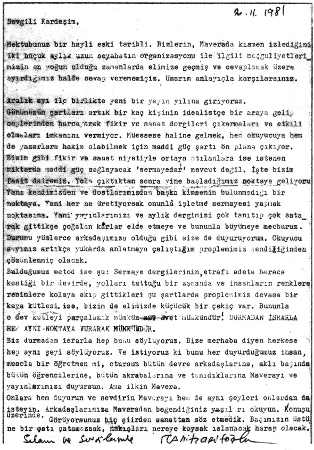

14 Mayıs 1974, Sarıkamış
Selâm Rahim Ağa,
Kişi birden bire uzun yıllar alıştığı kentten bin iki yüz, bin üç yüz kilometreye doğru ayrılıyorsa ve gittiği yeri hiç tanımıyorsa ve orada bir yıl kalma zorunluluğundaysa, bir şeye, bir hüzne belki bir mahkûmluğu beleniyor.
Bu yüzden işte 13 Nisan günü saat ll’lerde uçak; bulutların masalımsı görünüşü üzerinde, tam iç dünyamın havasına uygun bir dekorda bir bilinmezin pençesine kapılmış gibi ince bir hüzünle akıyordu.
Ankara’yı geçince görmediğim topraklar üzerindeyim. Bulutların izin verdiği aralıklardan kara kesimleri görünüyor, sadece kısa bir zaman sonra yine başka bir dünya, güneşi ve sonsuz berrak maviliği gök ediniyor.
Yanımda Trakyalı bir köylü oturuyor. Kalın lacivert kumaştan uzun paltosunu, eşi görülmedik bir acemilikle çıkarıp üste yerleştirdi. Bunu yaparken ve oturup yerleşirken müthiş bir yer darlığından bunalmış haldeydi.
Yanındaki üçüncü koltukta genç bir kadın, kucağındaki çocuğu adama vererek mantosunu çıkardıktan sonra geri aldı. Aralarında bir şeyler mırıldandılar. Bu da bittikten sonra Trakyalı artık her şey halledilmiş gibi arkasına yaslandı ve merakla uçak içinin ileriye uzanan tünelini, tavanın sağını, solunu ve nihayet oturduğu koltuğu ve pencereleri araştırdı.
Dönünce göz göze geldik. Çenesine doğru incelen yüzünde hafif bir endişe perdelenmişti, az biraz terlemişti.
—Ne yana böyle, dedi.
Anladım ki uçağın menzilinden sonrasını soruyor asıl.
—Sarıkamış, dedim.
—Biz Ağrı, dedi hemen. Binmezdim ama kızım ısrar etti. Çabuk olsun diye böyle istedi. O, Almanya’dan da uçakla geldi. Çocuğu babasının ailesine bırakacağız Ağrı’da. Bir iki gün kalıp döneceğiz.
İşte buydu hikâye.
Böylece nereye gittiğimize dair kesin bir şey biliyordum. Öteki yolcular figüranlar gibi, dekor gibi oturuyorlardı kımıltısız.
Dönüp babasının anne ve babası yanına bırakılacak çocuğa baktım. İki yaşını doldurmamış bile. Anasının kucağında ağzındaki biberonun altına ağzını dayamış sütünü emiyor. Bu yaşta bir çocuk, memeden yeni kesilmiş bir çocuk, dedeyle nenenin yanında ama babasından iki bin kilometre ilerde büyüyecek ve kim bilir kaç yaşına kadar onları senede bir kez ancak görebilecek.
İşte yine Almanya karşımızdaki. Binlerce küçük hikâyeden biri.
—Hiç imkân yok muydu yanınızda kalabilmesi için, dedim.
—Yoktu dedi kadın. Gündüzleri çalışıyormuş. Çocuğu yanına veriyorlarmış ama beyi onun ağlamalarından ders çalışamıyormuş. Tahsildeymiş erkek.
Yanınızda bakıp büyütecek şartları sağlamadan neden çocuk yaparsınız demedim, yanımda oturan babanın sözümü yakışıksız bulacağını düşünerek.
Gelip giden hostesler çocuğun yanaklarını sıkıyorlar, anlıyormuş gibi eğilip konuşuyorlar onunla. Bravo kızlara, şefkat ve ilgiye ne kadar ihtiyacı olacağını biliyorlar sanki.
Yanımızdaki ikili sıranın pencere yanındaki koltuklardan arka arkaya üçünü açarak hasta yatağı yapmışlar. Ağır hasta bir kadın yatıyor. Başucunda şiş ve matlaşmış terli yüzünün ortasında hiç kıpırdamadan apaçık duran donuk bakışlarının yanında genç bir adam oturuyor. Ara sıra eğilip bir şeyler söylüyor.
Kadın konuşamıyor. Ama dudaklarını hemen hiç oynatmadan, yüzü ve bakışı hiç değişmeden yine de karşılık veriyor olmalı ki adam hosteslerle bir şey konuşuyor!
Genç adam bir kasabalı gibi giyinmiş. Uçakta, ama hiç önemi yok, bir hastanede, bir evde, bir odada gibi. Hastasından hiç başını ayırmıyor.
Ankara’da uzun bir rötardan sonra saat 17’de tekrar uçağa giderken kadının sedyeyle ilk yardımdan çıkarıldığını ve genç adamın gözü yine hastasında yürüdüğünü gördüm.
Erzurum’da yolcularını bekleyenlerin ... bir cankurtaran hazır bekliyordu indiğimizde.
Sıcakların yavaş yavaş başladığı İstanbul’dan sonra, Erzurum’da sert ve soğuk bir rüzgâr karşılıyor bizi.
Gece bir hayli ayaz. Kaloriferler yanıyor. Pencereler çift kat.
Bir binanın ikinci katında, ortasında balıklı, fıskiyeli bir havuz olan lokantada tipik Erzurumlu garson son müşterilere hizmet ediyor. İçkisiz, bir hayli büyük, iç açıcı bir serinlikte, temiz bir Anadolu lokantası.
Bir tarafı “aile yeri” diye ayırmışlar. Nitekim fark etmeden o tarafa yürüyünce ikaz edildik.
Çoğu kızlardan oluşan yirmi, yirmi beş kişilik bir turist kafilesi... Sessizce yemek yiyorlar. Alışılmış turist topluluklarındaki konuşma kalabalığı, olur olmaz neşeler, gülüşler yok onlarda.
Yurtlarından çok uzaktalar, ihtimal Asya’dan dönüyorlar, turistlikten yorulmuş, gına getirmiş olabilirler.
Yemekten sonra otelin holünde otururken içeriye bir Alman karı-koca giriyor, odalarına çıkıyor. Yarım saat sonra bir hippi Alman daha. Soruyor, kapının önündeki Almanya plakalı araba acaba Almanya’ya mı dönecek, yoksa ters istikamete mi yolu? Otostop için kestirme yollar arayan bir seyyah.
Ertesi gün Erzurum’u dolaşmaya çıkıyorum. Saat 13’e kadar vaktim var.
Böyle Rahim Ağa, yaz dedin son görüşmemizde telefonda, Sarıkamış’tan bize. Geç oldu ama yazmaya başladık. Cevabını alırsam, gördüğüm kadar ve şu bir aydır içinde yaşadığım, Mayıs’ın 14’ü olmasına rağmen hâlâ soğuk ve sağanak yağmurları getiren rüzgârlar esen, denizden 2100 metre irtifada, yurdumuzun en yüksek kasabası Sarıkamış’ı yazar, anlatırım.
Aman ha mektup beklerim. Benim aslan erlerin deyimiyle “bol havadisli” olsun.
Cahit Zarifoğlu[2]
